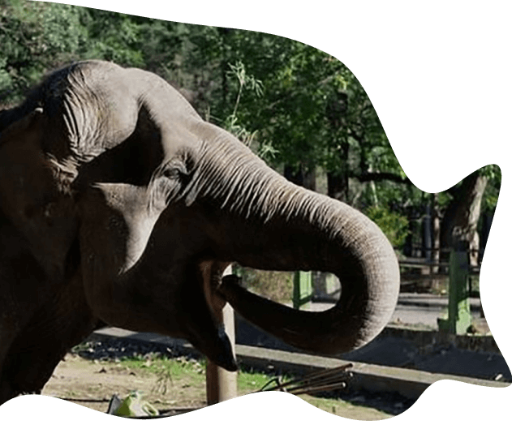
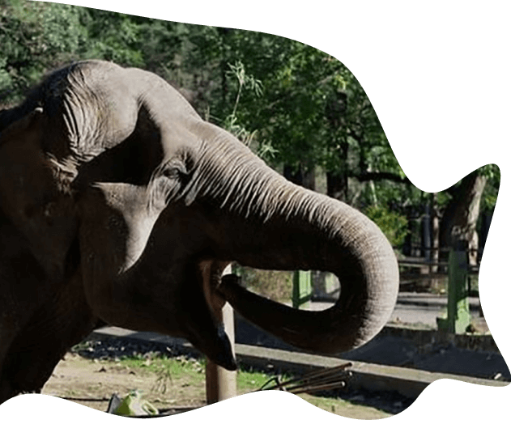

En argentina
+15
Casos
en la última década
¿Qué se considera un caso de negligencia?
Hablamos de negligencia cuando el animal sufre situaciones desagradables a causa de las personas encargadas de preservar su bienestar.
DIFERENTES TIPOS DE NEGLIGENCIA
Defunciones
Abandono
Maltrato


 
